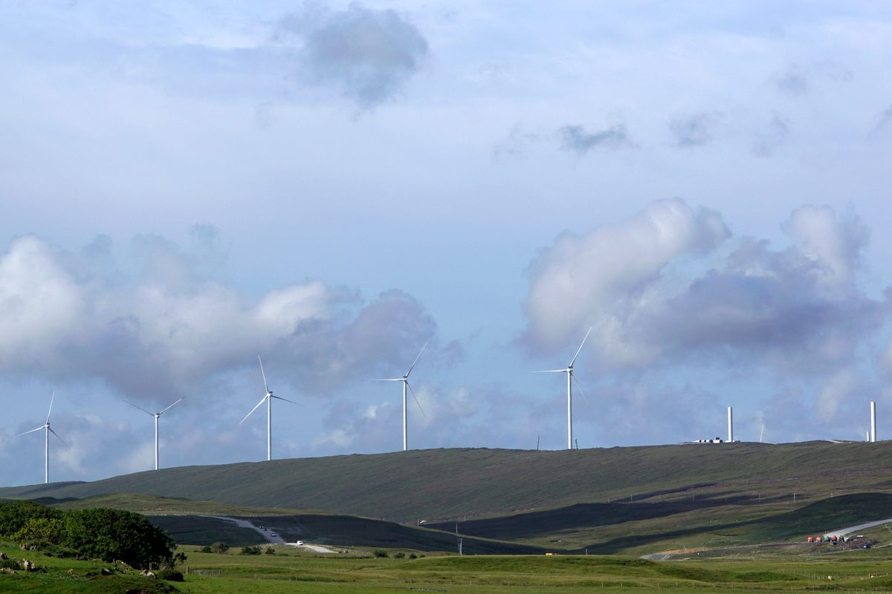

영국 공영 GB에너지, 셰틀랜드 출력제한 풍력 전기를 섬 에너지빈곤 해소에 쓰는 방안 협의

9월 영국 출력제한 보상금 5억500만 파운드로 사상 최대…셰틀랜드 풍력 이용률 약 60%에도 에너지빈곤율은 영국 최고 수준
영국 공영 에너지회사 GB에너지(GB Energy)가 스코틀랜드 셰틀랜드 제도에서 출력제한으로 버려지는 풍력 전기를 섬 안에서 쓰는 방안을 셰틀랜드 의회(SIC)·에너지기업 SSE·지역 공동체 단체들과 협의하고 있다. 이번 주 섬을 찾은 댄 맥그레일(Dan McGrail) GB에너지 최고경영자는 출력제한이 본토 전력망이 갖춰지면 줄어들 한시적 문제지만 그사이 요금은 계속 높다며, 국가에너지시스템운영자(NESO)·에너지규제기관 오프젬(Ofgem)·정부와 함께 해법을 찾겠다고 밝혔다. 출력제한 보상금은 전력망 과부하를 막기 위해 발전을 멈추거나 줄인 풍력단지에 주는 돈으로 결국 소비자 전기요금에 덧붙는 부담으로 메워지며, 지난 9월 영국 전체에서 5억500만 파운드로 사상 최대를 기록했다. 셰틀랜드의 바이킹(Viking) 풍력단지에서도 9월은 가동 이후 보상금이 세 번째로 많은 달이었다. 맥그레일 최고경영자는 셰틀랜드 풍력 이용률이 약 60%로 잉글랜드 남부(약 40%)보다 높은데도 가스망이 없고 송전요금이 비싸 에너지빈곤율이 영국에서 가장 높은 축에 든다며 "섬에 매우 큰 에너지빈곤 문제가 있다"고 말했다. 그는 이곳에서 해법을 찾으면 다른 섬과 본토 지자체로 넓힐 수 있다고 덧붙였다.
시민에너지 관점
한 달 5억500만 파운드가 전기를 만들지 말라는 대가로 나가고 그 비용이 소비자 요금에 얹히는 사이, 바람이 가장 좋은 섬의 주민은 비싼 에너지 요금에 시달리고 있다. 송전망만 넓히면 풀릴 문제라는 시각도 있지만, 송전망이 갖춰지기까지 버려지는 전기를 지역이 먼저 쓰게 하는 것은 요금 부담과 에너지빈곤을 함께 줄이는 현실적인 길이다. 같은 바이킹 풍력단지의 공동체기금이 주택 에너지효율 개선에 돈을 대고 있듯이, 발전소가 들어선 지역이 그 전기와 수익의 첫 수혜자이자 주인이 되도록 제도를 짜야 한다. 국내에서도 출력제한을 겪는 지역부터 남는 전기를 주민 난방과 공공시설에 쓰는 지역 사용 모델을 시범 도입해야 한다.
출처: The Shetland Times 2026-10-23 Scott Moncrieff 원문 보기
英公営GBエナジー、シェトランドで出力抑制された風力の電気を島のエネルギー貧困対策に使う方策を協議
9月の英国の出力抑制補償金は5億500万ポンドで過去最高…シェトランドの風力設備利用率は約60%でもエネルギー貧困率は英国最高水準
英国の公営エネルギー会社GBエナジー（GB Energy）が、スコットランド・シェトランド諸島で出力抑制により捨てられている風力の電気を島内で使う方策について、シェトランド議会（SIC）、エネルギー企業SSE、地域のコミュニティー団体と協議している。今週島を訪れたGBエナジーのダン・マクグレイル（Dan McGrail）最高経営責任者は、出力抑制は本土の送電網が整えば減る一時的な問題だが、その間も料金は高いままだとして、国家エネルギーシステム運用者（NESO）、エネルギー規制機関Ofgem、政府とともに解決策を探ると述べた。出力抑制補償金は、送電網の過負荷を防ぐために発電を止めたり減らしたりした風力発電所に支払われるもので、最終的には消費者の電気料金への上乗せで賄われ、9月には英国全体で5億500万ポンドと過去最高を記録した。シェトランドのバイキング（Viking）風力発電所でも、9月は稼働以来3番目に補償金の多い月だった。マクグレイル氏は、シェトランドの風力の設備利用率は約60%とイングランド南部（約40%）より高いのに、ガス網がなく送電料金も高いため、エネルギー貧困率は英国で最も高い水準にあると指摘し、「島には非常に大きなエネルギー貧困の問題がある」と語った。そのうえで、ここで解決策を見つければ他の島や本土の自治体にも広げられると付け加えた。
市民エネルギーの視点
1カ月に5億500万ポンドが「発電しないこと」の対価として支払われ、その費用が消費者の料金に上乗せされる一方で、風況に最も恵まれた島の住民は高いエネルギー料金に苦しんでいる。送電網を広げれば解決するという見方もあるが、送電網が整うまでの間に捨てられる電気を地域が先に使えるようにすることは、料金負担とエネルギー貧困を同時に減らす現実的な道だ。同じバイキング風力発電所のコミュニティー基金が住宅のエネルギー効率改善に資金を出しているように、発電所が立地する地域がその電気と収益の最初の受益者であり所有者となるよう制度を設計すべきだ。韓国でも、出力抑制を経験している地域から、余った電気を住民の暖房や公共施設に使う地域利用モデルを試験的に導入すべきだ。
出典: The Shetland Times 2026-10-23 Scott Moncrieff 原文を読む
英国国有GB Energy与设得兰协商把弃风电力用于缓解岛上能源贫困
9月英国弃风补偿金达5.05亿英镑创历史新高，设得兰风电利用率约60%，能源贫困率却居英国前列
英国国有能源公司GB Energy正在与设得兰群岛议会（SIC）、能源企业SSE及当地社区团体协商，探讨如何在岛内利用因限电而被弃用的风电。本周到访设得兰的GB Energy首席执行官Dan McGrail表示，限电是本土电网建成后就会减少的阶段性问题，但在此期间电费依然居高不下，他将与国家能源系统运营商（NESO）、能源监管机构Ofgem和政府一起寻找解决办法。弃风补偿金是为防止电网过载而停发或减发的风电场所获得的补偿，最终通过附加在消费者电费上的费用来承担，今年9月英国全国补偿金达到5.05亿英镑，创下历史新高。对设得兰的Viking风电场来说，9月也是其投运以来补偿金第三高的月份。McGrail指出，设得兰的风电利用率约为60%，高于英格兰南部的约40%，但由于没有天然气管网、输电费用又高，能源贫困率位居英国前列，他说：“岛上存在非常严重的能源贫困问题。”他还表示，如果能在这里找到解决办法，就可以推广到其他岛屿和本土的地方政府。
市民能源视角
每月5.05亿英镑作为不发电的代价被支付出去，这笔钱又被加进消费者的电费，而风力资源最好的海岛居民却在为高昂的能源费用发愁。有人认为只要扩建输电网就能解决问题，但在输电网建成之前先让地方使用这些被弃用的电力，是同时减轻电费负担和能源贫困的现实途径。正如同一座Viking风电场的社区基金正在资助住宅能效改造一样，制度应当让电站所在的地方成为这些电力和收益的首要受益者和主人。韩国也应从遭遇限电的地区开始，试点把富余电力用于居民供暖和公共设施的地方利用模式。
来源: The Shetland Times 2026-10-23 Scott Moncrieff 查看原文
Public GB Energy explores using Shetland's curtailed wind power to tackle island fuel poverty
UK constraint payments hit a record 505 million pounds in September; Shetland wind runs about 60 percent of the time yet fuel poverty is among the UK's highest
Publicly owned GB Energy is in talks with Shetland Islands Council (SIC), energy company SSE and local community groups on using wind power that is curtailed in the Scottish islands for consumption on Shetland itself. Visiting the isles this week, GB Energy chief executive Dan McGrail said curtailment is a time-limited problem that will shrink once mainland networks are built out, but bills stay high in the meantime, and he would work with the National Energy System Operator (NESO), regulator Ofgem and the government on solutions. Constraint payments compensate wind farms ordered to stop or cut output to prevent grid overload and are ultimately funded through extra charges on consumers' electricity bills; across the UK they reached a record 505 million pounds in September. For Shetland's Viking wind farm, September was the third-highest month for constraint payments since it began operating. McGrail noted that Shetland wind generates around 60 percent of the time against a typical 40 percent in southern England, yet with no gas grid and higher transmission charges its fuel poverty rates are among the highest in the UK, saying "There's a huge fuel poverty challenge on the island." He added that a solution found here could be scaled to other islands and to municipalities on the mainland.
Citizen Energy View
While 505 million pounds a month is paid out for not generating power and the cost lands on consumer bills, residents of the windiest islands struggle with high energy costs. Some argue that expanding transmission alone will fix this, but letting communities use otherwise wasted power until the grid catches up is a practical way to cut both bills and fuel poverty at once. Just as the Viking wind farm's community fund is already paying for home energy efficiency, the rules should make the places that host power plants the first beneficiaries, and owners, of that electricity and its revenue. Korea should pilot local-use models, starting in regions facing curtailment, that put surplus power into residents' heating and public facilities.
Source: The Shetland Times 2026-10-23 Scott Moncrieff Read the original